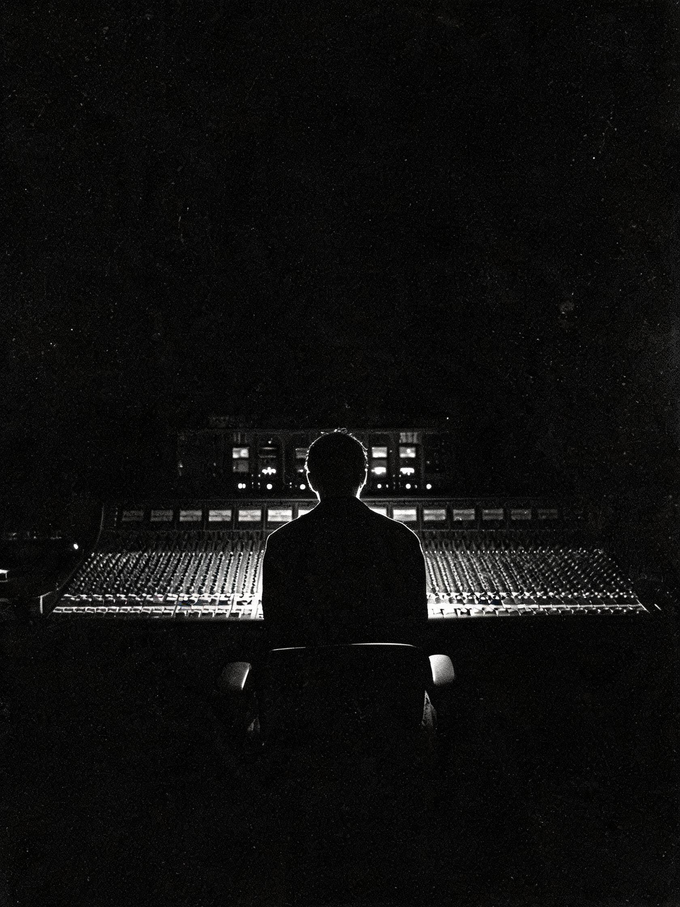
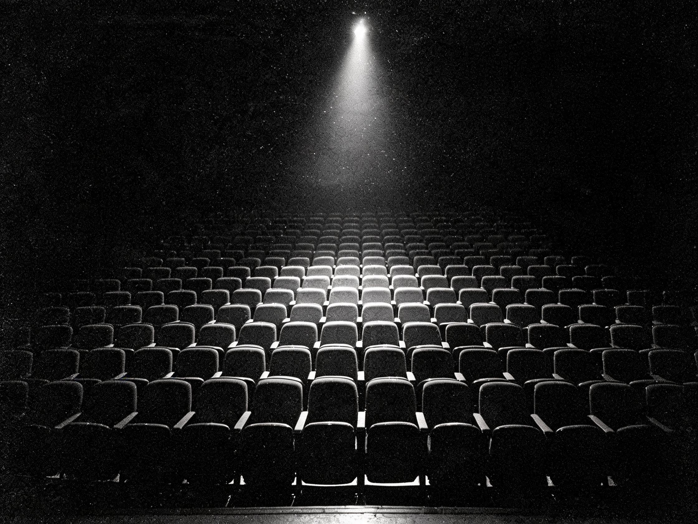
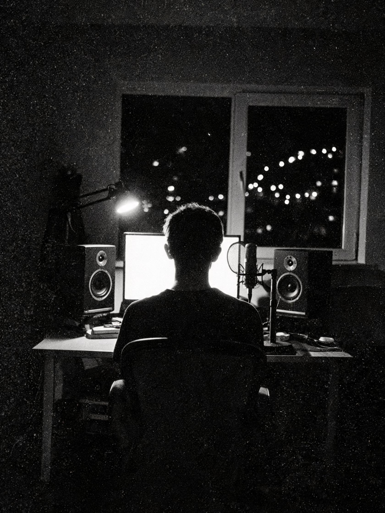

音乐制作
职业计划
20 Years20 Lessons
1 Year

Monochrome Archive
困 境
会有如此之大的差距？

- 真的超喜欢音乐，但只能坐在观众席，无法成为音乐人；无法将内心的音乐具象化。
- 写了很多歌词，有些也谱了曲。但变成完整的成品音乐并发行，毫无头绪。
- 教学书籍买了、读了；短视频刷了、学了。觉得自己应该是会做的，但作品还是有明显差距。
- 市面上不乏华丽的课程，报了，也只是成为学员之一，老师无法点对点照顾到自己真正的问题与不足。
- 各种硬件、软件、知识铺天盖地，“公婆”各有理，浪费了很多时间，最终还是不知道怎么选。
- 人工智能可以一键生成。你生成了，但没有激起任何浪花……
- 很难判定什么是好的声音、好的音乐。审美上不存在公约数，只能全凭自己的感觉。
- 压缩器、均衡器、混响器等似懂非懂，模模糊糊，根本听不出来有什么变化，更别说正确使用了。
- 设备买了，很知名的那种，但并没有感受到有多好——尤其是用在自己的作品中时。
- 知名插件挂上了，参数也是同样调整的，但出不来理想的那个声音。
- 没有，也不知道科学的工作流程。一首歌花了超长时间制作，最后还是不理想，其实做了很多多余甚至负面效果的工作。
- 欧美、日韩等顶级大师的手法会了、用了，最后还是免不了一遍遍修改，甲方还是不买账。
- 录音棚有了，歌很好，唱得也很好，但录出来的声音还是达不到“出版级”。
- 有客户咨询了，首次合作甲方需要通过你的作品来了解你，可这“作品集”却是你万事俱备后唯独缺少的“东风”——再次失去工作机会。

- 热情、激情、耐心与悟性都具备，功夫下得也差不多了，但达不到商用标准，客户不买账，无法交付，无法突破……
- 爱好、理想、专业与职业化之间的鸿沟难以逾越——无法变现，也无法自我滋养并生长……
- 智能化大爆发，是不是泡沫难以判断。混乱中未见一丝收获，却需要先来一波各种会员充值……
- 工作室、设备、技术都有了，却不知道如何与甲方合作。一单单崩了，一客客走了……
- 需要戴帽子了、胖了、颈椎疼了、腰不行了。自己没留意，没人提醒你，也没人说出原因……
持又无力、争却不脱 Four Kinds of Stuck
重新思考
先把问题问对。
这些问题，没有一条能靠“再买一个插件”解决。
它们属于认知，而不属于设备。
破 局
而是一条能走通的路。
— 从知识开始，再转换为真正的个人能力。
一位挚友One Companion
一员“沙场”归来的老将，带你练功——从知识开始，再转换为真正的个人能力。他不必站在台上让你仰望，他站在你旁边。
两种见习Two Modes
两种学习方式，解决录音／混音师路上的每个障碍——从录播课开始，到每周直播课，完成一次真正的进步。学，是输入；见习，是把它变成手感。
三位师傅Three Masters
三位老师，全方位塑造你的专业／职业能力——主讲老师一对一诊断式教学；班级群里，老师、助教随时答疑，解决你自己真正遇到的问题。
七份收获Seven Harvests
- 01录播 + 直播，1 年一对一能力塑造1 Year
- 02正版精选助学插件包Plugins
- 03助力创建个人作品集Portfolio
- 04工作室声学优化与设备选购建议Acoustics
- 05入行接单与商业运作指导Business
- 06平衡艺术与商业Balance
- 07一位音乐界的挚友Lifetime
关于你的导师
这路，你也可以走。
张晓奇
@张晓奇奇奇
录音 / 混音 · 歌斐木音乐主理人
我曾经的高光，标榜的意义至多能在商业合作中体现，而非在教学。
再者，每天的开端既然都是零点，我便不再纪念过往，但愿你也每天都在成长。
因此，在这里，仅愿你了解：
我当然也踩过坑、跟过师傅、研究过、琢磨过、开心过、愤怒过、无奈过、也倒下过，但依旧都站了起来。
所以，路，我走过了。经验之后，是自己对音乐独到的认知与见解。
所以，这路，你也可以走，且可以更快、更轻松。
我是怎样的一个人，你在本文中已经有了判断。
我拉着你走，
带你到本该属于你的地方。
是在“光”与“时”的交界处
成为自己！ Light & Time
课程大纲
一 课 一 科
20 Lessons
1 Lesson / Week
基础认知与素养
Foundation音频制作基础篇
录音与混音全流程认知、信号链路基础、数字音频概念
音乐素养篇
节奏感知、动态感知、音乐结构与编曲思维
基础乐理篇
音程、和弦、调式、和声功能、基础和声分析
视唱练耳篇
音准训练、节奏训练、旋律听记、和声听觉
音乐工作站基础篇
主流 DAW 基础操作、快捷键、工程管理
录音与制作
Recording人声录音篇
话筒选型与摆位、人声录制技巧、录音电平与增益管理
器乐录制篇
吉他／钢琴／鼓组／弦乐等乐器拾音方案、多话筒相位对齐
声学基础篇
声学环境认知、家庭工作室声学简易优化方案
混音核心技术
Mixing插件基础篇
EQ／压缩／混响／延迟等核心效果器原理与操作
贴唱混音篇
人声 + 伴奏的完整混音流程、平衡／频率／空间／动态处理
人声修音篇
音准修正、节奏对齐、呼吸编辑
音频听辨篇
频响判断训练、压缩量辨识、混响时间感知、效果器盲听
分轨混音篇
完整多轨混音工程处理、各声部融合与总线处理
智能技术与前沿应用
Intelligence人工智能提效篇
智能辅助混音工具（智能 EQ／压缩／母带）、工作流优化
人声克隆篇
智能人声合成技术原理与落地应用（音乐制作场景）
生成式音乐重混篇
为智能生成式音乐进行分轨提取、混音重制与再创作
母带与风格
Mastering母带制作篇
母线处理、响度标准化、立体声宽度、多版本导出交付
混音风格篇
流行／R&B／摇滚／民谣／电子等多风格混音策略与审美差异
职业发展
Career零工小活儿篇
行业常见需求（分轨整理／贴唱／修音／简单母带等）接单技能
运营管理篇
个人品牌建设、客户沟通与项目管理、报价体系、合同与交付规范
疑问解答
但承诺陪你把知识练成能力。
课程适合什么样的人？
能解决哪些具体问题？
多长时间能看到效果？
与其他同类型课程的区别？
可以学到作曲和编曲吗？
课程如何购买和学习？
本课程支持分期付款。本课程为知识付费产品，一经售出不可退款、转让，望理解。
会给安排工作、排单吗？
通常，不会从我们工作室排单给你，学完你会明白缘由，这是商业运作技巧其中之一。
商品信息
Product Spec / What's Included- 商品名称 录音 · 混音 一对一私教课（音乐制作职业计划 · 全 20 课）
- 商品类型 知识付费 · 虚拟服务（无实物商品，不发货）
- 课程构成 一对一直播私教课 20 节（6 章 20 课体系，含全部直播回放） 单课时长与排课节奏以问诊试课时与老师约定为准
- 服务周期 12 个月（自首次开课之日起，一对一全程陪跑；回放有效期与服务周期一致）
- 附加服务 开课前一对一“问诊”试课 1 次 · 每周直播答疑 · 班级群答疑 · 个人作品点评与商业运作指导
- 学习方式 手机 / 电脑 / 平板均可学习，直播课支持回放、可重复观看
- 开课方式 支付后联系客服约定开课时间，课程进度按个人实际情况与需求定制
- 价格与支付 支持分期付款（具体金额与分期方案请联系客服确认）
- 售后说明 虚拟知识产品，一经售出不支持退款、转让；购买前请先完成问诊试课，充分了解后再决定
先聊清楚你的问题，
再决定是否开始。
一对一“问诊”试课：把你的作品、你的困境、你的目标摆上桌，
我们当面拆解——这比再买一个插件更有用。
这路，你也可以走。
@张晓奇奇奇